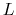
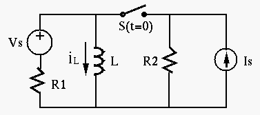

Solution:
First, current through  does not change instantaneously when the
switch is closed at  , and the voltage across (same as
the voltage across
, and the voltage across (same as
the voltage across  ) is zero, tthe current through
) is zero, tthe current through  is zero:
. Second, when the circuit reaches steady state after the
switch is closed at
is zero:
. Second, when the circuit reaches steady state after the
switch is closed at  , the inductor is a short-circuit, i.e., no
current goes through
, the inductor is a short-circuit, i.e., no
current goes through  . Therefore, for all
. Therefore, for all  .
.

Solution:
, Find equivalent resistance (when both energy sources are turned off) , Final solution:
Find  :
, To find , we combine the current source
(up) in parallel with treated as a current source with
current 1 (down) as a current source of (up). Then the voltage
across
:
, To find , we combine the current source
(up) in parallel with treated as a current source with
current 1 (down) as a current source of (up). Then the voltage
across  can be found by superposition. Due to ,
(up), due to (current
divider with
can be found by superposition. Due to ,
(up), due to (current
divider with  ),
(down). Then
(up), and
.
Now we have
),
(down). Then
(up), and
.
Now we have

Solution:
Solution
Find initial values: